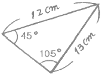
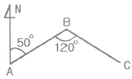
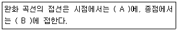
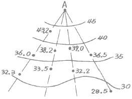
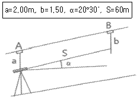
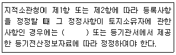

지적산업기사 (2016-08-21 기출문제)
1과목: 지적측량
1. 지적측량수행자가 지적소관청에 지적측량 수행계획서를 제출하여야 하는 시기는 언제까지를 기준으로 하는가?
- 지적측량신청을 받은 날
- 지적측량신청을 받은 다음 날
- 지적측량을 실시하기 전날
- 지적측량을 실시한 다음 날
(정답률: 66%)

2. 지적도근측량을 교회법으로 시행하는 경우에 따른 설명으로서 타당하지 않은 것은?
- 방위각법으로 시행할 때는 분위(分位)까지 독정한다.
- 시가지에서는 보통 배각법으로 실시한다.
- 지적도근점을 기준으로 하지 못한다.
- 삼각점, 지적삼각점, 지적삼각보조점 등을 기준으로 한다.
(정답률: 66%)
3. 측판측량으로 지적세부측량을 실시할 경우 한 점에서 많은 점을 관측하기에 적합한 측량방법은?
- 교회법
- 방사법
- 도선법
- 비례법
(정답률: 78%)
4. 경위의측량방법에 따른 세부측량에서 토지의 경계가 곡선인 경우, 직선으로 연결하는 곡선의 중앙종거의 길이 기준으로 옳은 것은?
- 5cm 이상 10cm 이하
- 10cm 이상 15cm 이하
- 15cm 이상 20cm 이하
- 20cm 이상 25cm 이하
(정답률: 84%)
5. 다음 중 일람도에 관한 설명으로 틀린 것은?
- 제명의 일람도와 축척 사이는 20mm를 띄운다.
- 축척은 당해 도면축척의 10분의 1로 한다.
- 도면의 장수가 5장 미만인 때에는 일람도를 작성하지 않아도 된다.
- 도면번호는 지번부여지역ㆍ축척 및 지적도ㆍ임야도ㆍ경계점 좌표등록부 시행지별로 일련번호를 부여한다.
(정답률: 77%)
6. 도선법에 의한 지적도근측량을 시행할 때에, 배각법과 방위각법을 혼용하여 수평각을 관측할 수 있는 지역은?
- 시가지 지역
- 축척변경시행 지역
- 농촌 지역
- 경계점좌표등록부 시행지역
(정답률: 61%)
7. 경계점좌표등록부를 갖춰 두는 지역에서 각 필지의 경계점을 측정할 때 사용하는 측량방법으로 옳지 않은 것은?
- 교회법
- 배각법
- 방사법
- 도선법
(정답률: 57%)
8. 측판측량방법에 의하여 작성된 도면에서 수평거리 90m인 지점을 경사분획(n) 25인 경사각에 표시하고자 한다. 이 때의 경사거리는? (단, 앨리데이드를 사용한 경우)
- 80.89m
- 83.78m
- 85.64m
- 87.31m
(정답률: 54%)
9. 조준의를 사용하여 독정할 수 있는 경사 분획수는 어느 것인가?
- -10 내지 +60
- -30 내지 +75
- -75 내지 +75
- -80 내지 +80
(정답률: 72%)
10. 축척변경 시행공고가 있은 후 원칙적인 경계점 표지의 설치자는?
- 소관청
- 측량자
- 사업시행자
- 토지소유자
(정답률: 51%)
11. 어떤 도선의 거리가 140m, 방위각이 240°일 때 이 도선의 종선의 값은?
- -70m
- 70m
- -140.0m
- 140.0m
(정답률: 62%)
12. 다음 중 지적측량의 방법이 아닌 것은?
- 사진측량방법
- 광파기측량방법
- 위성측량방법
- 수준측량방법
(정답률: 73%)
13. 착오를 방지하기 위한 방법으로 틀린 것은?
- 시준점과 기록부를 검증ㆍ확인한다.
- 장비의 작동방법을 확인하고 검증한다.
- 삼각형의 내각은 180도이므로 내각을 확인한다.
- 수평분도원이 중심과 일치하는가를 확인한다.
(정답률: 48%)
14. 신규측량에서 보조점을 측정하기 위하여 교회법을 쓸 때 교회법을 쓸 때 교회각으로서 가장 좋은 것은?
- 30°
- 60°
- 90°
- 120°
(정답률: 63%)
15. 지적측량에서 기준점을 설치하기 위한 측량으로 기초측량에 해당하지 않는 것은?
- 일필지측량
- 지적삼각측량
- 지적삼각보조측량
- 지적도근측량
(정답률: 81%)
16. 다음 중 경계복원측량을 가장 잘 설명한 것은?
- 지적도상 경계의 수정을 위한 측량이다.
- 경계점을 지표상에 복원하기 위한 측량이다.
- 지상의 토지구획선을 지적도에 등록하기 위한 측량이다.
- 지적도 도곽선에 걸쳐 있는 필지를 도곽선 안에 제도하기 위한 측량이다.
(정답률: 83%)
17. 축척 1/1,200 도상에서 그림과 같은 토지의 면적은?(오류 신고가 접수된 문제입니다. 반드시 정답과 해설을 확인하시기 바랍니다.)

- 2,150m2
- 2,340m2
- 2,421m2
- 2,540m2
(정답률: 44%)
18. 지적도의 축척이 1/600인 지역에 필지의 면적이 50.55m2일 때 지적공부에 등록하는 결정면적은?
- 50m2
- 50.5m2
- 50.6m2
- 51m2
(정답률: 84%)
19. 측선 AB의 방위가 N 50°E일 때 측선 BC의 방위는? (단, ∠ABC=120°이다.)

- N 70°E
- S 70°E
- S 60°W
- N 60°W
(정답률: 65%)
20. 다음 중 최소제곱법으로 조정 가능한 오차는?
- 정오차
- 기계오차
- 착오
- 우연오차
(정답률: 84%)
2과목: 응용측량
21. 수준측량의 용어에 대한 설명으로 틀린 것은?
- F.S(전시):표고를 구하려는 점에 세운 표척의 읽음값
- B.S.(후시):기지점에 세운 표척의 읽음값
- T.P(이기점):전시와 후시를 같이 취할 수 있는 점
- I.P.(중간점):후시만을 취하는 점으로 오차가 발생하여도 측량결과에 전혀 영향을 주지 않는 점
(정답률: 67%)
22. 완화 곡선에 대한 설명의 (A, B)로 옳은 것은?

- (원호, 직선)
- (원호, 원호)
- (직선, 원호)
- (직선, 직선)
(정답률: 75%)
23. 원곡선에서 곡선길이가 79.⑤m이고 곡선반지름이 150m일 때 교각은?
- 30°12
- 43°⑤
- 45°25
- 53°35
(정답률: 48%)
24. 지형측량에서 지성선(Topographical Line)에 관한 설명으로 틀린 것은?
- 지성선은 지표면이 다수의 평면으로 이루어 졌다고 가정할 때 이 평면의 접합부를 말하며 지세선이라고도 한다.
- 능선은 지표면의 가장 높은 곳을 연결한 선으로 분수선이라고도 한다.
- 합수선은 지표면의 가장 낮은 곳을 연결한 선으로 계곡선이라고도 한다.
- 동일 방향의 경사면에서 경사의 크기가 다른 두 면의 교선을 최대경사선 또는 유하선이라 한다.
(정답률: 53%)
25. 항공사진의 축척에 대한 설명으로서 옳은 것은?
- 초점거리에 비례하고 촬영고도에 반비례한다.
- 초점거리에 반비례하고 촬영고도에 비례한다.
- 초점거리와 촬영고도에 모두 비례한다.
- 초점거리에는 무관하고 촬영고도에는 반비례한다.
(정답률: 65%)
26. GNSS 측량의 정확도에 영향을 미치는 요소와 가장 거리가 먼 것은?
- 기지점의 정확도
- 위성 정밀력의 정확도
- 안테나의 높이 측정 정확도
- 관측시의 온도 측정 정확도
(정답률: 85%)
27. 곡선부 통과시 열차의 탈선을 방지하기 위하여 레일 안쪽을 움직여 곡선부 궤간을 넓히는데 이 때 넓힌 폭의 크기를 무엇이라 하는가?
- 캔트(cant)
- 확폭(slack)
- 편경사(super elevation)
- 클로소이드(clothoid)
(정답률: 68%)
28. 지름이 5m, 깊이가 150m인 수직 터널을 설치하려 할 때에 지상과 지하를 연결하는 측량방법으로 가장 적당한 것은?
- 직접법
- 삼각법
- 트래버스법
- 추선에 의하는 법
(정답률: 69%)
29. 그림과 같이 지성선 방향이나 주요한 방향의 여러 개의 관측선에 대하여 A로부터의 거리와 높이를 관측하여 등고선을 삽입하는 방법은?

- 직접법
- 횡단점법
- 종단점법(기준점법)
- 좌표점법(사각형 분할법)
(정답률: 76%)
30. 수준 측량기의 기포관 감도와 기포관의 곡률반지름에 대한 설명으로 틀린 것은?
- 기포관의 곡률반지름의 크기는 기포관의 감도에 영향을 미친다.
- 감도라 하면 기포관 한 눈금의 사이의 곡률 중심각의 변화를 초(“)로 나타낸 것이다.
- 기포관의 이동이 민감하려면 곡률반지름은 되도록 커야 한다.
- 기포관 1눈금이 2mm이고 반지름이 13.751m이면 그 감도는 30“이다.
(정답률: 68%)
31. 항공사진측량의 특징에 대한 설명으로 옳지 않은 것은?
- 정성적인 관측이 가능하다.
- 좁은 지역의 측량일수록 경제적이다.
- 분업화에 의한 능률적 작업이 가능하다.
- 움직이는 물체의 상태를 분석할 수 있다.
(정답률: 85%)
32. 대지표정이 끝났을 때 사진과 실제 지형과의 관계는?
- 대응
- 상사
- 역대칭
- 합동
(정답률: 80%)
33. GPS에서 채택하고 있는 타원체는?
- Hayford
- WGS84
- Bessel1841
- 지오이드
(정답률: 84%)
34. 경사진 터널의 고저차를 구하기 위한 관측값이 다음과 같을 때 A, B 두 점간의 고저차는?

- 20.51m
- 21.01m
- 21.51m
- 23.01m
(정답률: 50%)
35. 지형을 표현하는 방법 중에서 음영법(shading)에 대한 설명으로 옳은 것은?
- 비교적 정확한 지형의 높이를 알 수 있어 하천, 호수, 항만의 수심을 표현하는 경우에 사용한다.
- 지형이 높아질수록 색을 진하게, 낮아질수록 연하게 채색의 농도를 변화시켜 고저를 표현한다.
- 짧은 선으로 지표의 기복을 나타내는 것으로 우모법이라고도 한다.
- 태양광선이 서북쪽에서 경사 45° 각도로 비춘다고 가정했을 때 생기는 명암으로 표현한다.
(정답률: 72%)
36. 촬영고도 1500m에서 촬영한 항공사진의 연직점으로부터 10cm 떨어진 위치에 찍힌 굴뚝의 변위가 2mm이었다면 굴뚝의 실제 높이는?
- 20m
- 25m
- 30m
- 35m
(정답률: 62%)
37. 다음 중 상호표정인자로 구성되어 있는 것은?
- by, bz, κ, φ, ω
- by, κ, φ, ω, ω1
- κ, φ, ω, λ, Ω, ω1, ω2
- by, κ, φ, ω. λ, Ω, ω1
(정답률: 56%)
38. 수준측량에서 작업자의 유의사항에 대한 설명으로 틀린 것은?
- 표척수는 표척의 눈금이 잘 보이도록 양 손을 표척의 측면에 잡고 세운다.
- 표척과 레벨의 거리는 10m를 넘어서는 안된다.
- 레벨의 전방에 있는 표척과 후방에 있는 표척의 중간에 거리가 같도록 레벨을 세우는 것이 좋다.
- 표척을 전후로 기울여 관측할 때에는 최소 읽음값을 취하여야 한다.
(정답률: 59%)
39. 반지름(R)=215m인 원곡선을 편각법으로 설치하여 할 때 중심말뚝 간격=20m에 대한 편각(δ)은?
- 1°42‘54“
- 2°39‘54“
- 5°37‘54“
- 7°24‘54“
(정답률: 62%)
40. GNSS의 활용분야와 거리가 먼 것은?
- 위성영상의 지상기준점(Ground Control Point) 측량
- 항공사진의 촬영순간 카메라 투영중심점의 위치 측정
- 위성영상의 분광특성조사
- 지적측량에서 기준점 측량
(정답률: 42%)
3과목: 토지정보체계론
41. 공간데이터 처리시 위상구조로 가능한 공간관계의 분석 내용에 해당하지 않는 것은?
- 연결성
- 포함성
- 인접성
- 차별성
(정답률: 78%)
42. 다음 중 ‘사용자권한 등록관리청’이 사용자권한 등록파일에 등록하여야 하는 사항에 해당하지 않는 것은?(오류 신고가 접수된 문제입니다. 반드시 정답과 해설을 확인하시기 바랍니다.)
- 사용자의 비밀번호
- 사용자의 사용자번호
- 사용자의 이름
- 사용자의 소속
(정답률: 53%)
43. 3차원 토지정보체계 구축을 위한 측량기술의 설명으로 옳지 않은 것은?
- 위성측량 기술-광역지역에 대한 반복적인 시계열 3차원 자료 구축에 유리하다.
- 항공사진 측량기술-균질한 정확도와 원하는 축척의 수치지도 제작에 유리하다.
- GNSS 측량기술-기존의 평판이나 트랜식 측량에 비해 정확도가 떨어져 지적재조사 사업에 불리하다.
- 모바일 매핑 시스템-LIDAR, GPS, INS 등을 탑재하여 도로시설물의 3차원 정보 구축에 유리하다.
(정답률: 76%)
44. 필지중심토지정보시스템(PBLIS)에 해당하지 않는 것은?
- 지적측량시스템
- 부동산행정시스템
- 지적공부관리시스템
- 지적측량성과시스템
(정답률: 66%)
45. 토지정보시시스템(LIS)과 지리정보시스템(GIS)을 비교한 내용 중 틀린 것은?
- LIS는 필지를 GIS는 구역ㆍ지역을 단위로 한다.
- LIS는 지적도를 GIS는 지형도를 기본도면으로 한다.
- LIS는 대축척을 GIS는 소축척을 사용한다.
- LIS는 자료분석이 GIS는 자료관리 및 처리가 장점이다.
(정답률: 54%)
46. 지형이나 기온, 강수량 등과 같이 지표상에 연속적으로 분포되어 있는 현상을 표현하기 위한 방법으로 적합한 것은?
- 폴리곤화
- 점, 선, 면
- 표면모델링
- 자연모델링
(정답률: 57%)
47. 수치지적도에서 인접필지와의 경계선이 작업 오류로 인하여 하나 이상일 경우 원하지 않는 필지가 생기는 오류를 무엇이라 하는가?
- Undershoot
- Overshoot
- Dangle
- Sliver polygon
(정답률: 67%)
48. 지적전산자료를 전산매체로 제공하는 경우의 수수료 기준은?
- 1필지당 20원
- 1필지당 30원
- 1필지당 50원
- 1필지당 100원
(정답률: 66%)
49. 다음 중 토지정보시스템(LIS)의 질의어(query language)에 대한 설명으로 옳지 않은 것은?
- SQL은 비절차 언어이다.
- 질의어란 사용자가 필요한 정보를 데이터베이스에서 추출하는데 사용되는 언어를 말한다.
- 질의를 위하여 사용자가 데이터베이스의 구조를 알아야 하는 언어를 과정 질의어라 한다.
- 계급형(hierarchical)과 관계형(relational) 데이터베이스 모형은 사용화는 질의를 위해 데이터베이스의 구조를 알아야 한다.
(정답률: 38%)
50. 래스터 데이터에 대한 설명으로 틀린 것은?
- 일정한 격자모양의 셀이 데이터의 위치와 값을 표현한다.
- 해상력을 높이면 자료의 크기가 커진다.
- 격자의 크기를 확대할 경우 객체의 경계가 매끄럽지 못하다.
- 네트워크와 연계 구현이 용이하여 좌표변환이 편리하다.
(정답률: 64%)
51. 한국토지정보시스템(KLIS)에 대한 설명으로 옳은 것은? (단, 중앙 행정 부서의 명칭은 해당 시스템의 개발 당시 명칭을 기준으로 한다.)
- 건설교통부의 토지관리정보시스템과 행정자치부의 필지중심토지정보시스템을 통합한 시스템이다.
- 건설교통부의 토지관리정보시스템과 행정자치부의 시군구 지적행정시스템을 통합한 시스템이다.
- 행정자치부의 시군구 지적행정시스템과 필지중심 초지정보시스템을 통합한 시스템이다.
- 건설교통부의 토지관리정보시스템과 개별공시지가관리시스템을 통합한 시스템이다.
(정답률: 63%)
52. 벡터데이터의 기본요소와 거리가 먼 것은?
- 면
- 높이
- 점
- 선
(정답률: 86%)
53. 다음 중 벡터데이터의 장점으로 옳지 않은 것은?
- 정확한 형상묘사가 가능하다.
- 중첩기능을 수행하기에 용이하다.
- 객체의 위치가 직접 지도좌표로 저장된다.
- 객체별로 속성테이블과 연결될 수 있다.
(정답률: 55%)
54. 다음 중 1필지를 중심으로 한 토지정보시스템을 구축하고자 할 때 시스템의 구성요건으로 옳지 않은 것은?
- 파일처리 방식을 이용하여 데이터관리를 설계한다.
- 확장성을 고려하여 설계한다.
- 전국적으로 통일된 좌표계를 사용한다.
- 개방적 구조를 고려하여 설계한다.
(정답률: 33%)
55. 다음의 지적정보를 도형정도와 속성정보로 구분할 때 성격이 다른 하나는?
- 지번
- 면적
- 지적도
- 개별공시지가
(정답률: 52%)
56. 위성영상으로부터의 데이터 수집에 대한 설명으로 옳지 않은 것은?
- 원격탐사는 항공기나 위성에 탐재된 센서를 통해 자료를 수집한다.
- 위성영상은 GIS 공간데이터에 대한 자료원이 풍부한 나라들에게 매우 유용하다.
- 인공위성은 항공사진의 관측 영역보다 광대한 영역을 한 번에 관측할 수 있다.
- 시간과 노동을 감안하며 지상 작업에 비해 단위 비용이 적게 들기 때문에 GIS에 있어서 중요한 자료원이 된다.
(정답률: 50%)
57. 토지관리정보시스템(LMIS) 관리 데이터가 아닌 것은?
- 공시지가 자료
- 연속지적도
- 지적기준점
- 용도지역지구
(정답률: 36%)
58. 속성데이터에서 동영상은 다음 어느 유형의 자료로 처리되어 관리될 수 있는가?
- 숫자형
- 문자형
- 날짜형
- 이진형
(정답률: 71%)
59. 데이터베이스에서 자료가 실제로 저장되는 방법을 기술한 물리적인 데이터의 구조를 무엇이라 하는가?
- 개념 스키마
- 내부 스키마
- 외부 스키마
- 논리 스키마
(정답률: 55%)
60. 토지정보체계의 자료관리 과정 중 가장 중요한 단계는?
- 자료 검색 방법
- 데이터 베이스 구축
- 조작 처리
- 부호화(code화)
(정답률: 75%)
4과목: 지적학
61. 다음 중 구한말에 운영된 지적업무 부서의 설치 순서가 옳은 것은?
- 탁지부 양지국→탁지부 양지과→양지아문→지계아문
- 양지아문→탁지부 양지국→탁지부 양지과→지계아문
- 양지아문→지계아문→탁지부 양지국→탁지부 양지과
- 지계아문→양지아문→탁지부 양지국→탁지부 양지과
(정답률: 55%)
62. 지적제도의 발전단계별 특징으로서 중요한 등록사항에 해당하지 않는 것은?
- 세지적-경계
- 법지적-소유권
- 법지적-경계
- 다목적지적-등록사항 다양화
(정답률: 60%)
63. 우리나라의 토지등록제도에 대하여 가장 잘 표현한 것은?
- 선 등기, 후 이전의 원칙
- 선 등기, 후 등록의 원칙
- 선 이전, 후 등록의 원칙
- 선 등록, 후 등기의 원칙
(정답률: 66%)
64. 물권 설정 측면에서 지적의 3요소로 볼 수 없는 것은?
- 국가
- 토지
- 등록
- 공부
(정답률: 74%)
65. 지계발행 및 양전사업의 전담기구인 지계아문을 설치한 연도로 옳은 것은?
- 1895년
- 1901년
- 1907년
- 1910년
(정답률: 46%)
66. 토지조사사업 당시 인적편성주의에 해당되는 공부로 알맞은 것은?
- 토지조사부
- 지세명기장
- 대장, 도면 집계부
- 역둔토 대장
(정답률: 44%)
67. 다음 중 토지의 사정(査定)에 대한 설명으로 가장 옳은 것은?
- 소유자와 강계를 확정하는 행정처분이었다.
- 소유자가 강계를 결정하는 사법처분이었다.
- 소유권에 불복하여 신청하는 소송행위였다.
- 경계와 면적을 결정하는 지적조사 행위였다.
(정답률: 66%)
68. 고려시대에 토지업무를 담당하던 기관과 관리에 관한 설명으로 틀린 것은?
- 정치도감은 전지를 개량하기 위하여 설치된 임시관청이었다.
- 토지측량업무는 이조에서 관장하였으며, 이를 관리하는 사람을 양인ㆍ전민계정사(田民計定使)라 하였다.
- 찰리변위도감은 전국의 토지분급에 따른 공부등에 관한 불법을 규찰하는 기구이었다.
- 급전도감은 고려 초 전시과를 시행할 때 전지분급과 이에 따른 토지측량을 담당하는 기관이었다.
(정답률: 51%)
69. 다음 지번의 진행방향에 따른 분류 중 도로를 중심으로 한 쪽은 홀수로, 반대쪽은 짝수로 지번을 부여하는 방법은?
- 기우식
- 사행식
- 단지식
- 혼합식
(정답률: 68%)
70. 토지조사사업 당시의 일필지 조사에 해당되지 않는 것은?
- 소유자 조사
- 지목조사
- 지주조사
- 강계조사
(정답률: 50%)
71. 다음 중 지번의 기능과 가장 관련이 적은 것은?
- 토지의 특정화
- 토지의 식별
- 토지의 개별화
- 토지의 경제화
(정답률: 76%)
72. 다음 설명 중 틀린 것은?
- 공유지연명부는 지적공부에 포함되지 않는다.
- 지적공부에 등록하는 면적단위는 [m2]이다.
- 지적공부는 소관청의 영구보존 문서이다.
- 임야도의 축척에는 1/3000, 1/6000 두 가지가 있다.
(정답률: 74%)
73. 지적제도의 유형을 등록차원에 따라 분류한 경우 3처원 지적의 업무영역에 해당하지 않는 것은?
- 지상
- 지하
- 지표
- 시간
(정답률: 71%)
74. 다음 중 토지조사사업에서의 사정 결과를 바탕으로 작성한 토지대장을 기초로 등기부가 작성되어 최초로 전국에 등기령을 시행하기 된 시기는?
- 1910년
- 1918년
- 1924년
- 1930년
(정답률: 47%)
75. 우리나라 임야조사사업 당시의 재결기관으로 옳은 것은?
- 고등토지조사위원회
- 세부측량검사위원회
- 임야조사위원회
- 도지사
(정답률: 76%)
76. 토지 등록사항 중 지목이 내포하고 있는 역할로 가장 옳은 것은?
- 합리적 도시계획
- 용도 실상 구분
- 지가 평정기준
- 국토 균형 개발
(정답률: 83%)
77. 우리나라에서 토지를 토지대장에 등록하는 정차상 순서로 옳은 것은?
- 지목별순으로 한다.
- 소유자의명의 “가, 나, 다”순으로 한다.
- 지번순으로 한다.
- 토지 등급순으로 한다.
(정답률: 79%)
78. 조선시대 양안에서 소유자의 변동이 있을 경우 소유자의 등재시기로 맞는 것은?
- 입안을 받을 때 등재한다.
- 양안을 새로 작성할 때 등재한다.
- 소유자의 변동과 동시 등재한다.
- 임의적인 시기에 등재한다.
(정답률: 50%)
79. 백문매매(白文賣買)에 대한 설명이 옳은 것은?
- 백문매매란 입안을 받지 않은 매매계약서로, 임진왜란 이후 더욱더 성행하였다.
- 백문매매로 인하여 소유자를 보호할 수 있게 되었다.
- 백문매매로 인하여 소유권에 대한 확정적 효력을 부여받게 되었다.
- 백문매매란 토지거래에서 매도자, 매수자, 해당관서 등이 각각 서명함으로서 이루어지는 거래를 말한다.
(정답률: 65%)
80. 다음 중 토지조사사업의 주요 목적과 거리가 먼 것은?
- 토지소유의 증명제도 확립
- 조세 수입 체계 확립
- 토지에 대한 면적단위의 통일성 확보
- 전문 지적측량사의 양성
(정답률: 72%)
5과목: 지적관계
81. 지적소관청이 정확한 지적측량을 시행하기 위하여 국가기준점을 기준으로 정하는 측량기준점은?
- 공고기준점
- 수로기준점
- 지적기준점
- 위성기준점
(정답률: 65%)
82. 지적공부에 등록하는 경계(境界)의 결정권자는 누구인가?
- 행정자치부장관
- 국토교통부장관
- 지적소관청
- 시ㆍ도지사
(정답률: 57%)
83. 다음 중 300만원 이하의 과태료 부과 대상인 자는?
- 무단으로 측량성과 또는 측량기록을 복제한 자
- 심사를 받지 아니하고 지도등을 간행하여 판매하거나 배포한 자
- 정당한 사유 없이 측량을 방해한 자
- 측량기술자가 아님에도 불구하고 측량을 한 자
(정답률: 74%)
84. 지적소관청이 축척변경을 할 때 축척변경 승인 신청서에 첨부하는 서류가 아닌 것은?
- 축척변경의 사유
- 지번등 명세
- 토지대장 사본
- 토지소유자의 동의서
(정답률: 41%)
85. “주차장” 지목을 지적도에 표기하는 부호로 옳은 것은?
- 주
- 차
- 장
- 주차
(정답률: 78%)
86. 다음 중 지적기준점에 해당하지 않는 것은?
- 지적삼각점
- 지적도근점
- 지적삼각보조점
- 위성기준점
(정답률: 75%)
87. 다음 등록사항의 정정에 대한 설명 중 ()안에 해당하지 않는 것은?

- 등기부등본
- 등기필증
- 등기완료통지서
- 등기사항증명서
(정답률: 52%)
88. 다음 중 토지소유자가 토지이동이 발생환 경우 지적소관청에 신청하는 기간 기준이 다른 하나는?
- 등록전환 신청
- 지목변경 신청
- 신규등록 신청
- 바다로 된 토지의 등록말소 신청
(정답률: 63%)
89. 축척변경에 따른 청산금을 산정한 결과 증가된 면적에 대한 청산금의 합계와 감소된 면적에 대한 청산금의 합계에 차액이 생긴 경우 이에 대한 처리 방법으로 옳은 것은?
- 그 행정자치부장관의 부담 또는 수입으로 한다.
- 그 시ㆍ도지사의 부담 또는 수입으로 한다.
- 그 지방자치단체의 부담 또는 수입으로 한다.
- 그 토지소유자의 부담 또는 수입으로 한다.
(정답률: 76%)
90. 합병에 따른 경계ㆍ좌표 또는 면적은 따로 지적측량을 하지 아니하고 별도의 구분에 따라 결정한다. 다음 중 합병 후 필지의 면적 결정 방법으로 옳은 것은?
- 소관청의 직권으로 결정한다.
- 면적은 삼사법으로 계산한다.
- 합병한 후에는 새로이 측량하여 면적을 결정한다.
- 합병 전 각 필지의 면적을 합산하여 결정한다.
(정답률: 75%)
91. 지번의 구성 및 부여방법에 관한 설명(기준)이 틀린 것은?
- 시ㆍ도지사가 지번부여지역별로 북동에서 남서로 지번을 순차적으로 부여한다.
- 본번(本番)과 부번(副番)으로 구성하되, 본번과 부번 사이에 “-”표시로 연결한다.
- 신규등록의 경우에는 그 지번부여지역에서 인접토지의 본번에 부번을 붙여서 지번을 부여한다.
- 합병의 경우에는 합병 대상 지번 중 선순위의 지번을 그 지번으로 하되, 본번으로 된 지번이 있을 때에는 본번 중 선순위의 지번을 합병후의 지번으로 한다.
(정답률: 66%)
92. 토지소유자는 토지를 합병하려면 대통령령으로 정하는 바에 따라 지적소관청에 합병을 신청하여야 한다. 다음 중 토지의 합병을 신청할 수 있는 조건이 아닌 것은?
- 합병하려는 토지의 지번부여지역이 같은 경우
- 합병하려는 토지의 지목이 같은 경우
- 합병하려는 토지의 토지의 소유자가 서로 같은 경우
- 합병하려는 토지의 지적도의 축척이 서로 다른 경우
(정답률: 71%)
93. 도시개발사업 등 시행지역의 토지이동 신청에 관한 특례와 관련하여, 대통령령으로 정하는 토지개발사업에 해당하지 않는 것은?
- 「지역 개발 및 지원에 관한 법률」에 따른 농지기반사업
- 「택지개발촉진법」에 따른 택지개발사업
- 「산업입지 및 개발에 관한 법률」에 따른 산업단지개발사업
- 「도시 및 주거환경정비법」에 따른 정비사업
(정답률: 48%)
94. 다음 중 지적 관련 법령상 용어에 대한 설명이 옳은 것은?
- 지적소관청이란 지적공부를 관리하는 시장을 말하며 자치구가 아닌 구를 두는 신의 시장 또한 포함한다.
- 면적이란 지적공부에 등록한 필지의 지표면상의 넓이를 말한다.
- 일반측량이란 기본측량, 공공측량, 지적측량 및 수로측량을 말한다.
- 지목변경이란 지적공부에 등록된 지목을 다른 지목으로 바꾸어 등록하는 것을 말한다.
(정답률: 59%)
95. 지목의 설정이 바르게 연결된 것은?
- 염전:동력에 의한 제조공장시설의 부지
- 도로:1필지 이상에 진입하는 통로로 이용되는 토지
- 공원:도시공원 및 녹지 등에 관한 법률에 따라 묘지공원으로 결정ㆍ고시된 토지
- 유지(溜地):연ㆍ왕골 등이 자생하는 배수가 잘 되지 아니하는 토지
(정답률: 49%)
96. 다음 중 지적소관청이 지적공부의 등록사항에 잘못이 있는지를 직권으로 조사ㆍ측량하여 정정할 수 있는 경우에 해당하지 않는 것은?
- 지적공부의 등록사항이 잘못 입력된 경우
- 지적공부의 작성 당시 잘못 정리된 경우
- 지적도에 등록된 필지가 면적의 증감이 있고 경계의 위치가 잘못된 경우
- 토지이동정리 결의서의 내용과 다르게 정리된 경우
(정답률: 59%)
97. 다음 중 지적공부에 해당하지 않는 것은?
- 대지권등록부
- 공유지연명부
- 일람도
- 경계점좌표등록부
(정답률: 63%)
98. 일반 공증이 종교의식을 위하여 법요를 하기 위한 사찰 등 건축물의 부지와 이에 접속된 부속 시설물의 부지 지목은?
- 사적지
- 종교용지
- 잡종지
- 공원
(정답률: 78%)
99. 현재 시행되고 있는 지목의 종류는 몇 종인가?
- 25종
- 26종
- 27종
- 28종
(정답률: 77%)
100. 지적측량업자가 손해배상책임을 보장하기 위하여 가입하여야 하는 보증보험의 보증금액 기준으로 옳은 것은? (단, 보장기간은 10년 이상으로 한다.)
- 1억원 이상
- 5억원 이상
- 10억원 이상
- 20억원 이상
(정답률: 73%)
지적측량신청을 받은 다음 날을 기준으로 수행계획서를 제출해야 하는 이유는 지적측량은 신청을 받은 후 일정 기간 내에 수행되어야 하기 때문입니다. 따라서 측량수행자는 신청을 받은 다음 날부터 측량을 수행하기 전에 수행계획서를 제출하여야 합니다.